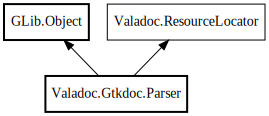

Parser
Object Hierarchy:

Description:
public class Parser :
Object,
ResourceLocator
Content:
Creation methods:
Methods:
- private Note? _parse_note (SourceComment comment)
- private void add_note (ref Comment? comment, Note? note)
- private void add_taglet (ref Comment? comment, Taglet? taglet)
- private inline void append_block_content_not_null (Collection<Block> run, Block? element)
- private inline void append_block_content_not_null_all (Collection<Block> run, Collection<Block>? elements)
- private inline void append_inline_content_not_null (Run run, Inline element)
- private void append_inline_content_string (Run run, string current)
- private bool check_xml_close_tag (string tagname)
- private bool check_xml_open_tag (string tagname)
- private Inline create_type_link (string name, bool c_accept_plural = false)
- private inline string fix_resource_path (string path)
- private bool ignore_current_xml_close ()
- private bool is_numeric (string str)
- private Token next ()
- private string normalize (string text)
- public Comment? parse (Node element, GirSourceComment gir_comment, GirMetaData gir_metadata, InternalIdRegistrar id_registrar)
- private void parse_anchor ()
- private Collection<Block> parse_block_content ()
- private Taglet? parse_block_taglet (SourceComment gir_comment, string taglet_name)
- private TableCell? parse_docbook_entry (Style default_style = NONE)
- private Collection<Block>? parse_docbook_example (string tag_name = "example")
- private List<Block>? parse_docbook_figure ()
- private Run? parse_docbook_footnote ()
- private Paragraph? parse_docbook_graphic ()
- private Note? parse_docbook_important ()
- private inline Collection<Block>? parse_docbook_informalexample ()
- private Table? parse_docbook_informaltable ()
- private BlockContent? parse_docbook_information_box_template (string tagname, BlockContent container)
- private Embedded? parse_docbook_inlinegraphic (string tag_name = "inlinegraphic")
- private Collection<Block>? parse_docbook_itemizedlist (string tag_name = "itemizedlist", Bullet bullet_type = UNORDERED)
- private Inline? parse_docbook_link_tempalte (string tagname, bool is_internal)
- private ListItem? parse_docbook_listitem ()
- private ListItem? parse_docbook_member ()
- private Note? parse_docbook_note ()
- private inline Collection<Block>? parse_docbook_orderedlist ()
- private Collection<Block>? parse_docbook_para (string tag_name = "para")
- private Paragraph? parse_docbook_programlisting ()
- private List<Block>? parse_docbook_refsect2 (int nr = 2)
- private TableRow? parse_docbook_row (Style default_style = NONE)
- private Collection<Block>? parse_docbook_section ()
- private inline Collection<Block>? parse_docbook_simpara ()
- private List? parse_docbook_simplelist ()
- private void parse_docbook_spaces (bool accept_paragraphs = true)
- private Collection<TableRow>? parse_docbook_tbody ()
- private Paragraph? parse_docbook_term ()
- private Table? parse_docbook_tgroup ()
- private TableRow? parse_docbook_thead ()
- private Paragraph? parse_docbook_title ()
- private Collection<Block>? parse_docbook_variablelist ()
- private ListItem? parse_docbook_varlistentry ()
- private Warning? parse_docbook_warning ()
- private Paragraph? parse_gtkdoc_paragraph ()
- private Paragraph? parse_gtkdoc_source ()
- private Run? parse_highlighted_template (string tag_name, Style style)
- private Run parse_inline_content ()
- private Collection<Block> parse_mixed_content ()
- private Comment? parse_root_content (SourceComment gir_comment)
- private InlineTaglet? parse_symbol_link (string tagname)
- private Run? parse_xml_tag ()
- private Link? parse_xref ()
- private void report_unexpected_token (Token got, string expected)
- private void report_warning (Token got, string message)
- private void reset (SourceComment comment)
- public string resolve (string path)
Fields:
Inherited Members:
All known members inherited from class GLib.Object
All known members inherited from interface Valadoc.ResourceLocator